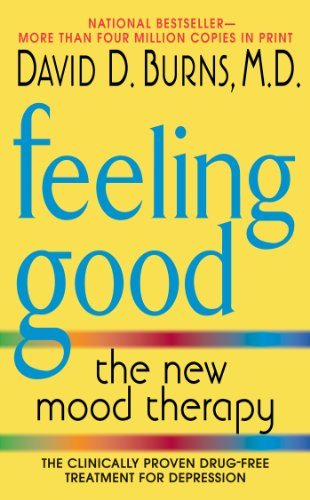

Depression - Overview
Depression (also called major depressive disorder or clinical depression) is a common but serious mood disorder. It causes severe symptoms that affect how you feel, think, and handle daily activities, such as sleeping, eating, or working.
To be diagnosed with depression, the symptoms must be present for at least two weeks.
There are different types of depression, some of which develop due to specific circumstances.
Major depression, which includes symptoms of depression most of the time for at least 2 weeks that typically interfere with one’s ability to work, sleep, study, and eat.
Persistent depressive disorder (also called dysthymia), which often includes less severe symptoms of depression that last much longer, typically for at least 2 years.
Perinatal depression, which occurs when a woman experiences major depression during pregnancy or after delivery (postpartum depression).
Seasonal affective disorder, which comes and goes with the seasons, typically starting in late fall and early winter and going away during spring and summer.
Depression with symptoms of psychosis, which is a severe form of depression where a person experiences psychosis symptoms, such as delusions (disturbing, false fixed beliefs) or hallucinations (hearing or seeing things that others do not see or hear).
Individuals with bipolar disorder (formerly called manic depression or manic-depressive illness) also experience depressive episodes, in which they feel sad, indifferent, or hopeless, combined with a very low activity level. But a person with bipolar disorder also experiences manic episodes, or unusually elevated moods in which the individual might feel very happy, irritable, or “up,” with a marked increase in activity level.
Depression - symptoms
If you have been experiencing some of the following signs and symptoms most of the day, nearly every day, for at least two weeks, you may be suffering from depression: -> Persistent sad, anxious, or “empty” mood -> Feelings of hopelessness, or pessimism -> Feelings of irritability, frustration, or restlessness -> Feelings of guilt, worthlessness, or helplessness -> Loss of interest or pleasure in hobbies and activities -> Decreased energy, fatigue, or feeling "slowed down" -> Difficulty concentrating, remembering, or making decisions -> Difficulty sleeping, early morning awakening, or oversleeping -> Changes in appetite or unplanned weight changes -> Thoughts of death or suicide, or suicide attempts -> Aches or pains, headaches, cramps, or digestive problems without physical cause that do not ease with treatment -> Suicide attempts or thoughts of death or suicide Not everyone who is depressed experiences every symptom. Some people experience only a few symptoms while others may experience many. Several persistent symptoms in addition to low mood are required for a diagnosis of major depression, but people with only a few – but distressing – symptoms may benefit from treatment as well. The severity and frequency of symptoms and how long they last will vary depending on the individual and his or her particular illness. Symptoms may also vary depending on the stage of the illness.
Depression - Treatment
Depression, even the most severe cases, can be treated. The earlier treatment begins, the more effective it is. Depression is usually treated with medications, psychotherapy, or a combination of the two. If these treatments do not reduce symptoms, electroconvulsive therapy (ECT) and other brain stimulation therapies may be options to explore.
Antidepressants
Antidepressants are medicines commonly used to treat depression. They may help improve the way your brain uses certain chemicals that control mood or stress. You may need to try several different antidepressant medicines before finding the one that improves your symptoms and has manageable side effects. A medication that has helped you or a close family member in the past will often be considered. Antidepressants take time usually 4 to 8 weeks to work, and often, symptoms such as sleep, appetite, and concentration problems improve before mood lifts, so it is important to give medication a chance before deciding whether it works. If you begin taking antidepressants, do not stop taking them without talking to your health care provider. Sometimes people taking antidepressants feel better and then stop taking the medication on their own, and the depression returns. When you and your health care provider have decided it is time to stop the medication, usually after a course of 6 to 12 months, the health care provider will help you slowly and safely decrease your dose. Stopping them abruptly can cause withdrawal symptoms.Psychotherapies
Several types of psychotherapy (also called “talk therapy” or "counseling") can help people with depression by teaching new ways of thinking and behaving and how to change habits that contribute to depression. Examples of evidence-based approaches specific to the treatment of depression include cognitive-behavioral therapy (CBT) and interpersonal therapy (IPT). More information on psychotherapy is available on the NIMH Psychotherapies webpage.Brain Stimulation Therapies
If medications do not reduce the symptoms of depression, electroconvulsive therapy (ECT) may be an option to explore. Based on the latest research: ECT can provide relief for people with severe depression who have not been able to feel better with other treatments. Electroconvulsive therapy can be an effective treatment for depression. In some severe cases where a rapid response is necessary or medications cannot be used safely, ECT can even be a first-line intervention. Once strictly an inpatient procedure, today ECT is often performed on an outpatient basis. The treatment consists of a series of sessions, typically three times a week, for two to four weeks. ECT may cause some side effects, including confusion, disorientation, and memory loss. Usually these side effects are short-term, but sometimes memory problems can linger, especially for the months around the time of the treatment course. Advances in ECT devices and methods have made modern ECT safe and effective for most patients. Talk to your doctor and make sure you understand the potential benefits and risks of the treatment before giving your informed consent to undergoing ECT. ECT is not painful, and you cannot feel the electrical impulses. Before ECT begins, a patient is put under brief anesthesia and given a muscle relaxant. Within one hour after the treatment session, which takes only a few minutes, the patient is awake and alert. Other more recently introduced types of brain stimulation therapies used to treat medicine-resistant depression include repetitive transcranial magnetic stimulation (rTMS) and vagus nerve stimulation (VNS). Other types of brain stimulation treatments are under study.Beyond Treatment:
Things You Can Do Once you begin treatment, you should gradually start to feel better. Here are other tips that may help you or a loved one during treatment for depression: Try to get some physical activity. Just 30 minutes a day of walking can boost mood. Try to maintain a regular bedtime and wake-up time. Eat regular, healthy meals. Do what you can as you can. Decide what must get done and what can wait. Try to connect with other people, and talk with people you trust about how you are feeling. Postpone important decisions, such as getting married or divorced, or changing jobs until you feel better. Avoid using alcohol, nicotine, or drugs, including medications not prescribed for you.Recommended musics!
These are some recommended music
BOB-MARLEY-THREE-LITTLE-BIRDS
A song that motivates you in an amazing way!

Better Place by Rachel Platten
A song that motivates you in an amazing way!
Recommended videos
These are some videos which might help you feel better!
Recommended book
Feeling Good: The New Mood Therapy Kindle Edition
